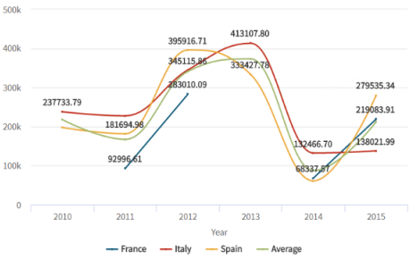
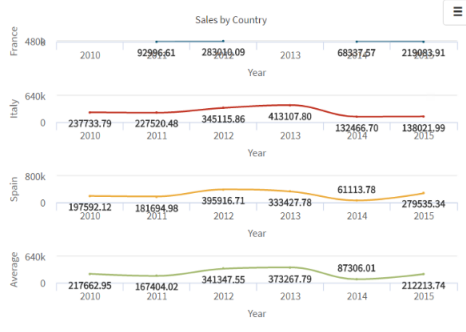

Specifies if the chart series are plotted together in the same chart or alone in separate charts. Values
Description
It allows using one or several series on the same Chart. Run-time/Design-timeThis property applies only at design-time. Samples
In the same chart In separate charts AvailabilityThis property is available since GeneXus 15 upgrade 12. Scope Objects: Dashboard See Also
|